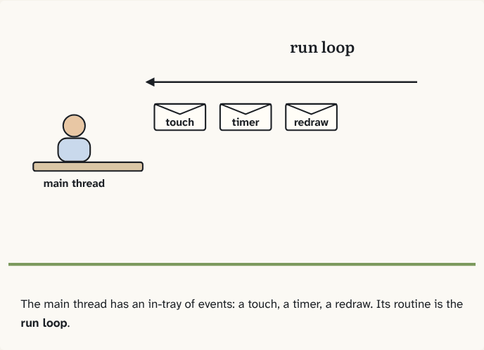

Free courses · 5 puzzles so far · about 30 minutes
iOS for Android developers
You already know Android's building blocks. This course maps each one onto its iOS twin, and shows exactly where the twins differ: the app that freezes instead of stopping, the run loop, queues instead of handlers, the main actor, and memory without a garbage collector.

How it works
Each puzzle starts from the Android block you know, gives you the iOS one, shows both in a diagram that plays itself, and ends with three questions you have to answer to unlock the next one. Facts come from Apple's documentation and the Swift book, quoted on every page. How these courses are made, and how they're checked →
Modules
Every puzzle opens: start wherever you like. Each one builds on the ones before it; its check tells you you're ready for the next. ✓ marks the ones you've passed (saved only in this browser).
Module 1: The Android blocks, on iOS
Lifecycle, threads, queues, concurrency and memory: what's the same, and what isn't. Know this already? Take the check →
- Start here: Frozen, not stopped On Android, an app in the background keeps its process, and its threads can keep running. On iOS, a few seconds after the user leaves, your app stops running any code at all. Here's what that means for your work.
- The run loop is your Looper On Android, the main thread runs a Looper: take a message from the queue, run it, repeat. iOS has the same idea under another name. Here it is, and the one way it differs. Builds on 0.
- Queues, not handlers On Android, you post work to the main thread with a Handler and run slow work on another thread or a coroutine on another thread. iOS has one system for both. Here it is. Builds on 1.
- The main actor In puzzle 2, you moved work between queues by hand. Kotlin did the same job with coroutines and withContext. Swift has its own version, with one idea Kotlin doesn't have built in. Builds on 2.
- Counting, not collecting On Android, objects nothing uses anymore are found and freed for you, cycles included. Swift doesn't work that way. Here's what it does instead, and the leak it can't see. Builds on 2.
Module 2: Screens and the system (next)
Scenes and windows, SwiftUI's rendering model vs UIKit, background execution and Jetsam, launch time.
Module 3: Shipping (later)
Xcode builds, signing, frameworks and Swift packages, profiling with Instruments, Swift 6 data-race safety.
Take it with you
Continue with Claude
Copies a prompt that turns Claude into your tutor for this course: what you've passed, the words you know, the questions you slipped on, and how to teach you, one small block at a time. Paste it into Claude, or any AI assistant. Built in your browser from your progress; nothing is sent anywhere.
Download for Obsidian
The whole course as an Obsidian vault: a note per puzzle linked to the puzzles it builds on (open the graph view to see the building blocks), a glossary, and every question as a flashcard for the Spaced Repetition plugin.